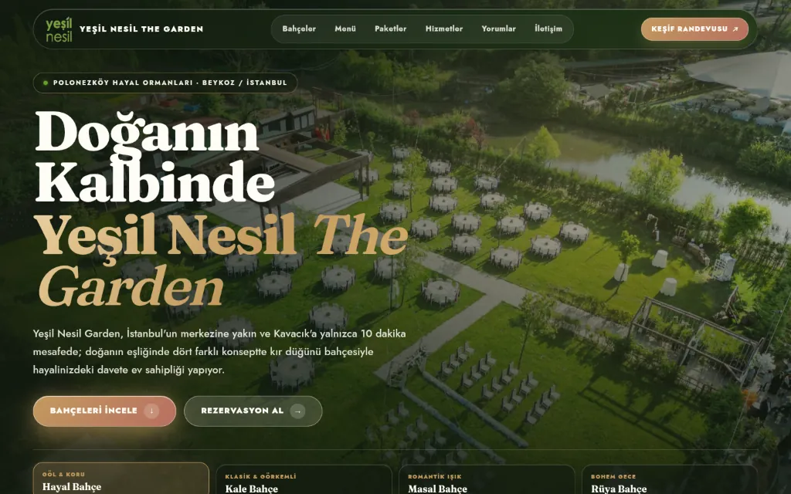

Mustafa Ayverdi
İşletmeler için yapay zekâ otomasyonları geliştiriyorum.
RandevuZeka
14 gün ücretsiz
Müşterileriniz WhatsApp'tan 7/24 randevu alsın, hatırlatmalar kendiliğinden gitsin.
VitrinOS

Ürünleriniz için yapay zekâ ile reklam görselleri.
Yeşil Nesil The Garden
